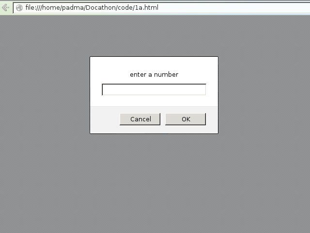
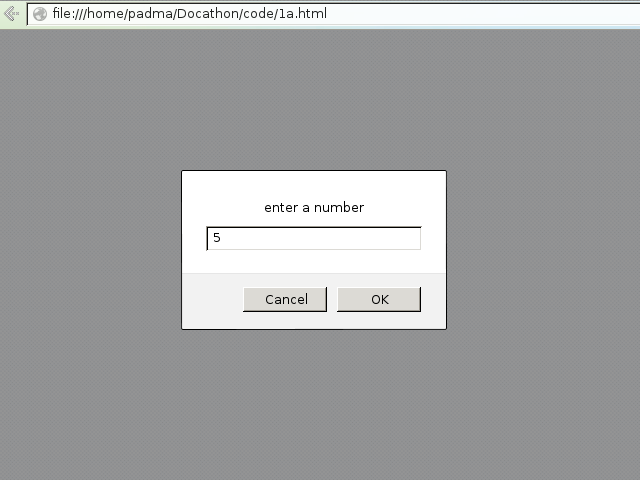
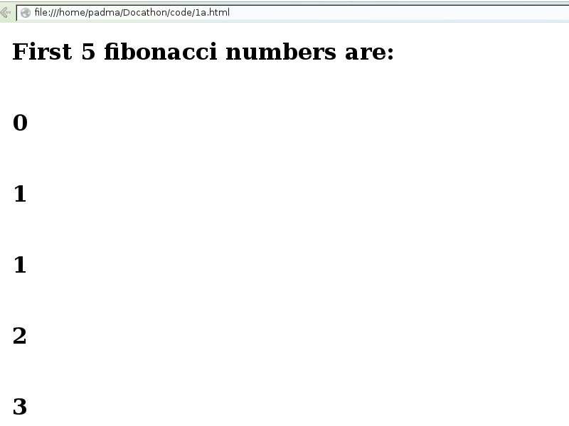
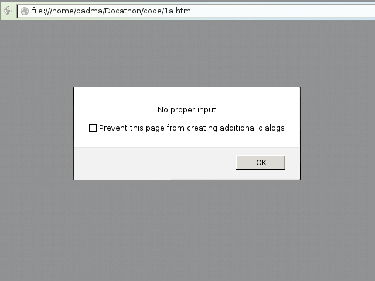

<p> - This is paragraph tag. It defines a paragraph.
<script> - used to define a client-side script, such as a JavaScript. It contains scripting statements.
alert() - An alert box is often used if you want to make sure information comes through to the user.
Note: When displaying tags or the code in the markdown file, make sure you leave four spaces from the beginning of the line to display the tags without any special meaning.
1a.html
<html>
<body>
<script type="text/javascript">
//initialize variables
var fib1=0,fib2=1,fib=0;
var n=prompt("enter a number");
if(n!=null && n>0)
{
document.write("<h1>First " + n + " fibonacci numbers are: </h1><br>");
//if input is one number
if(n==1)
document.write("<h1>" + fib1 + "</h1><br>");
//if input is two numbers
else
document.write("<h1>" + fib1 + "</h1><br><h1>" + fib2 + "</h1><br>");
//if input is more than two numbers, find the next Fibonacci number
for(i=3;i<=n;i++)
{
fib=fib1+fib2;
document.write("<h1>" + fib + "</h1><br>");
fib1=fib2;
fib2=fib;
}
}
else
alert("No proper input");
</script>
</body>
</html>
Steps for checking output-
Right-click on the file and select open-with firefox/iceweasel/chromium/chrome.


